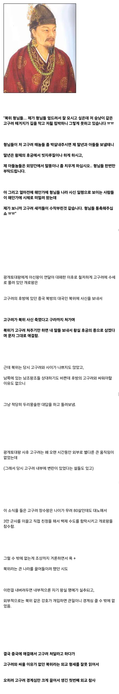
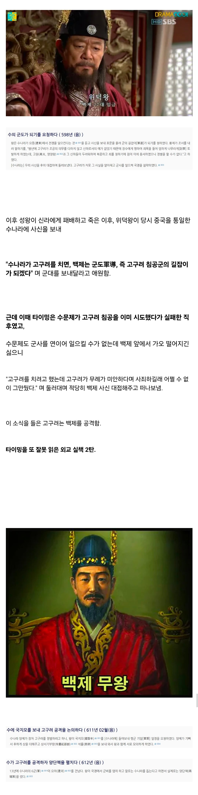
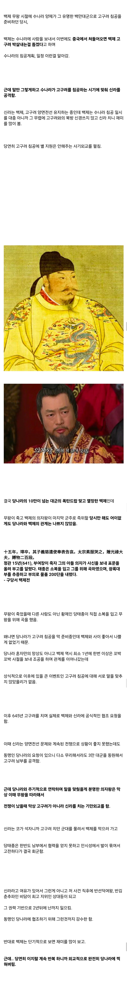
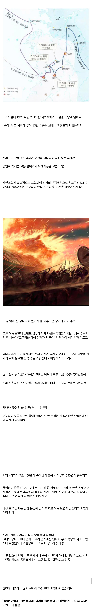

신라가 더 강하니까 살아남고 삼국통일을 한거임
국가가 붕괴할수 있는 절체절명의 상황에서 묘수를 통해 외교적으로 당을 포섭하면서 백제와 고구려를 닦아버리고 그 후에도 당과의 1:1 결전에서 승리해내면서 삼국통일의 대업을 완수함
신라는 고구려와 백제가 못했던걸 해냈으니 살아남은거고 무엇보다 마지막 당나라와의 결전에서 승리하고 당나라를 몰아낸 이상 고구려보다 더 강한나라임
고구려와 백제는 결국 어떤 이유든지 중국세력을 못막아냈고 신라는 막아냈으니까
강해서 살아남은게 아니고 살아남아서 강한거임
신라가 통일할 당시 최약체였고, 중국과의 결전은
실제로 고구려, 백제 유민이 없엇으면 상상도 못할정도였음
통일했으니 결과적으로 신라가 가장 강해진건 사실인데
가장 강해서 통일한건아님
그니까 그말이라고 말장난 ㄴ
백제딴에선 신라쳐도 고구려가 계속 당막으니까 신라조져야지 이런생각으로 했겠지 13만 수군드랍 예상못하고
지금도 그렇지만 당시에도 외교랑 기만전술로 이익 보려고 하니까 뭐 신라백제 합쳐서 고구려치도 나중엔 신라백제 결혼동맹 때도 신라가 본인들의 이득을 위해서 백제 치기도 하고 고구려도 신라 도와서 백제치기도 하고 고구려백제 같이 신라 공격하고
결국 당시 본인들의 이득을 위해 최선을 다한거고 결국 신라가 이겼으니 결과론임 반대로 백제가 이겼으면 신라멸망시킬때 당나라 불렀다고 욕하는 애들 있겠지
신라가 삼한 통일하고 통일국가에서 정체성 갖기전엔 삼국에 같은 한반도 이딴이야기 의미없다고 생각함
백제 신라 거의 멸망직전 상태였네
신라 입장에서 고구려 백제는 걍 남의나라지
중국이든 뭐든 끌어들이고 이기기만 하면 그만
백제도 욕해야지 그럼
외세 끌어들이는건 매국노임
같은 나라가 아닌데 왜 매국노임
북한이 중국 소련 끌여들인건 어떻게 생각하시나요
그건 적끼리 동맹한건대 왜 매국노임?
그시절전엔 민족개념이 없었잖아 기벌포전투이후에나 등장하는게 민족국가인데
당나라 끌어들인 김춘추는 백제에 사위랑 딸 죽고 시체도 백제에서 티배깅하려고 가져가고 백제랑 싸우다 죽은 친족만 수십명에 고모뻘인 성덕여왕 진덕여왕때 백제에 성 40개 넘게 뺏기고 영토 40% 따먹히고 한강유역은 고구려한테 따이고 본인은 고구려에 지원요청하러 갔다가 감옥에서 뒤질뻔했는데 같은민족 ㅇㅈㄹ하게생겼냐?
나때는 민족개념이 생긴건 신라통일 이후로 배웠고 지금도 똑같잖아 ㅋㅋ 저땐 ㄹㅇ 남남임. 그거도 몇백년동안 싸운 원수사이 ㅋㅋ 3국끼리 서로 따져보면 자기 조상한번씩 목 따버렸잖아 ㅋㅋ
애초에 황룡사탑 건축 목적만 봐도 신라는 나머지 백제 고구려랑 같은 민족이란 의식 자체가 없었음
역사를 현대인 시점으로 보지 마세요.
신라 왕족은 흉노족 왕족 이주자들이니까
고구려/백제랑 기원조차 다르기도 하니 뭐..
굳이 한반도 내에서만 분쟁할 이유가 없긴해
https://youtu.be/3hFy69IwJnw?si=IJvtrdbBfXMaiuyC
눈을 떴구나.. 신라갤로 오거라
경주 김유신묘 ip 로 판명
은 농담이고 역사 아는 사람이면 외세 어쩌고는 개소리란거 당연히 앎
국사에서 한민족 통일국가는 고려다 이래서 요런 소리 나오게 된듯
우리 입장에서야 고구려가 킹구려지만 백제, 신라 입장에서는 깡패새끼들이 따로 없었으니...
솔직히 이건 욕할수가 없어
전쟁은 그냥 수단과 방법을 가리지 않고 하는거고
신라는 중국 끌어들이지 않았으면 그냥 멸망이었음
사실 논리 자체가 말이 안 되는 것이...
신라가 통일하고 나서야 삼한통일이라는 명분을 내세운 건데
통일전까지는 서로 숙적이자 최대의 위협이었지
'남한은 6.25때 저항하지 말고 흡수 통일 했어야 하는데 외세를 끌어들여 민족 통일을 방해했다'와 별 차이가 없다
개짖는 소리 이상 이하도 아님
욕먹는대에는 짜친행보가 많아서 그럼
고구려가 구해줘도 백제랑 동맹맺어서 공격하고
전성기도 동맹 뒷통수 치고 시작되고 하니까
통일도 외세의힘 빌려서 하니까 3스트라이크 먹은듯?
개로개로개로 힘차게~개로개로~나간다~우리 앞에 있는 모두 시련들 겁낼 필요 없다~
저기에 일본까지 야므지게 끌어들였지 ㅋㅋㅋ 백제부흥운동때 백강전투에 왜근 끌어들이고, 왜구를 이용해 신라 위협한것도 있고... 이것땜에 광개토대왕이 신라 한번 도와줬지
심지아 무측천조차 백제는 조지는게 맞다면서 바로 병력 꽂았다는거지
원래 신라의 백제병탄(나는 개인적으로 삼국통일이라는 용어는 지양하려고 함)을 내려치기하는데는 지역적인 감정이 크게 작용한다고 생각함
나름 의의도 있었고 당시 지정학적 상황에서 봤을때 신라의 선택은 결코 못할짓도 아니었음